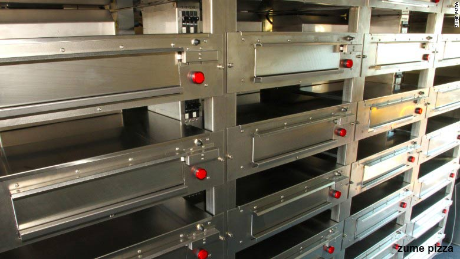
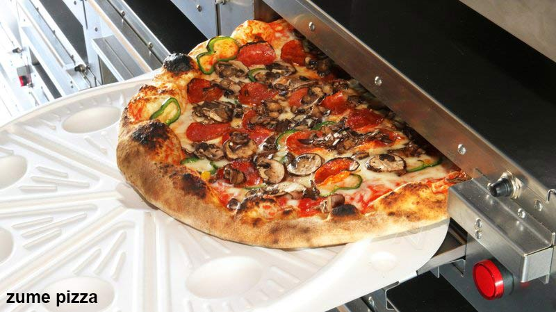
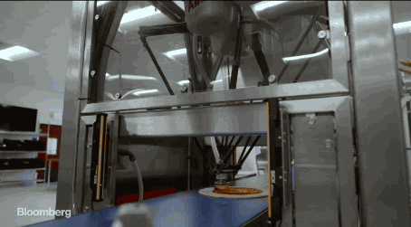

At Zume, my main responsibility was the redesign and retrofit of the custom truck ovens. I also reprogrammed the sauce spreading robot, Marta, to give a more even spread and fabricated custom hardware for the trucks and kitchen ranging from shelving to movable refrigerator cartridges.
Zume Pizza
Robotics Product Management Internship

skills
mechanical engineering, prototyping, robotics
role
robotics product management intern
client
zume pizza
Key Learnings
As a product manager, I managed external vendors including two consulting companies, two manufacturers and an independant welder on the redesign project. This gave me valuable experience in how and when to push external contacts for faster results as well as how to set them up to succeed. I also gained experience in classical mechanical design such as heat transfer, fluid dynamics and design for manufacturing. Finally, I confirmed my desire to work in a fast paced and ever changing environment such as a startup.
My Work
Oven Redesign
With my oven redesign, I improved the ovens’ throughput by 600%. This design change saves roughly $11,500 in the construction of each foodtruck, decreases deliver time by 6 minutes per pizza and frees up space on the trucks for other equipment.


Testing: Burning Pizza
In the old ovens, pizzas were cooking unevenly, causing burning on the left side. After conducting over 100 cook tests, changing one variable at a time, I discovered a couple issues with the design. The coil shape and lack of front insulation on the door were the main issues which I fixed for the next version of the ovens.
Robot Reprogramming
After the chefs changed to a thicker sauce recipe, the spreading became uneven and spilled off the pizza. I reprogrammed the ABB Flexpicker by analyzing the issues and modifying the coordinates and movements in C. The spreading pattern emulates how a chef would do it, to give a more homemade feel.
